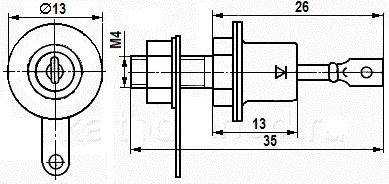

Стабилитрон Д815
Стабилитрон Д815 (Д815А, Д815Б, Д815В, Д815Г, Д815Д, Д815Е, Д815Ж) - диффузионно-сплавной, кремниевый, большой и средней мощности. Основное назначение - стабилизация диапазона напряжений от 5,6 В до 18 В. Ток стабилизации имеет диапазон от 25 мА до 1,4 А. Имеет жёсткие выводы и металлостеклянный корпус. На корпусе стабилитрона наносится его тип и цоколёвка. Масса стабилитрона с комплектующими деталями - 6 г.

Рис. 1 - Размеры стабилитрона Д815
Таблица 1
| Параметр | Д815А | Д815Б | Д815В | Д815Г | Д815Д | Д815Е | Д815Ж |
|---|---|---|---|---|---|---|---|
| Напряжение стабилизации, В: | |||||||
| при Iст = 1 А | 5..5,6..6,2 | 6,1..6,8..7,5 | 7,4..8,2..9,1 | - | - | - | - |
| при Iст = 500 мА | - | - | - | 9..10..11 | 10,8..12..13,3 | 13,3..15..16,4 | 16,2..18..19,8 |
| Временная нестабильность напряжения стабилизации, не более, %: | |||||||
| при Iст = 1 А | 4 | 4 | 4 | - | - | - | - |
| при Iст = 0,5 А | - | - | - | 4 | 4 | 4 | 4 |
| Постоянное напряжение (прямое) при Iпр = 0,5 А, не более, В | 1,5 | 1,5 | 1,5 | 1,5 | 1,5 | 1,5 | 1,5 |
| Дифференциальное сопротивление, не более, Ом: | |||||||
| при Iст = 1 А и Т = +25°C | 0,6 | 0,8 | 1 | - | - | - | - |
| при Iст= 0,5 А и Т = +25°C | - | - | - | 1,8 | 2 | 2,5 | 3 |
| при Iст= 50 мА и Т = +25°C | 20 | 15 | 8 | - | - | - | - |
| при Iст= 25 мА и Т = +25°C: | - | - | - | 15 | 20 | 25 | 30 |
| при Iст= 50 мА и Т=60 и +120°C | 30 | 20 | 12 | - | - | - | - |
| при Iст= 25 мА и и Т=60 и +120°C | - | - | - | 20 | 30 | 40 | 50 |
Таблица 2
| Параметр | Д815А | Д815Б | Д815В | Д815Г | Д815Д | Д815Е | Д815Ж |
|---|---|---|---|---|---|---|---|
| Минимальный ток стабилизации, мА | 50 | 50 | 50 | 25 | 25 | 25 | 25 |
| Максимальный ток стабилизации, А: | |||||||
| при Tк ≤ +75°C | 1,4 | 1,15 | 0,95 | 0,8 | 0,65 | 0,55 | 0,45 |
| при Tк = +130°C | 0,36 | 0,3 | 0,25 | 0,2 | 0,17 | 0,135 | 0,11 |
| Прямой ток (постоянный), А | 1 | 1 | 1 | 1 | 1 | 1 | 1 |
| Перегрузка по току стабилизации в течение 1 с, А: | |||||||
| при Tк ≤ +75°C | 2,8 | 2,3 | 1,9 | 1,6 | 1,3 | 1,1 | 0,9 |
| при Tк = +130°C | 0,72 | 0,6 | 0,5 | 0,4 | 0,34 | 0,27 | 0,22 |
| Рассеиваемая мощность, Вт: | |||||||
| при Tк ≤ +75°C | 8 | ||||||
| при Tк = +130°C | 2 | ||||||
| Температура корпуса, °C | 130 | ||||||
| Рабочая температура (окружающей среды), °C | -60...+120 | ||||||
Источники
katod-anod.ru - Стабилитрон Д815 (Д815А, Д815Б, Д815В, Д815Г, Д815Д, Д815Е, Д815Ж)